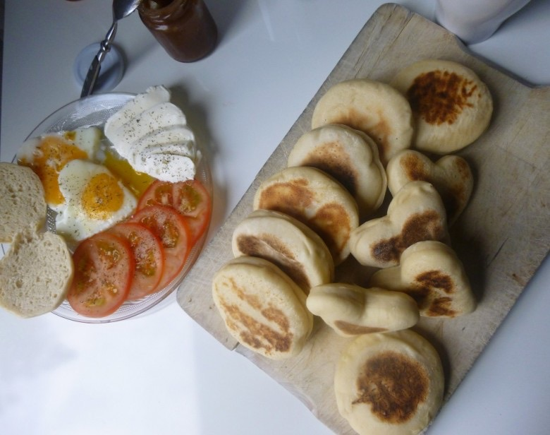
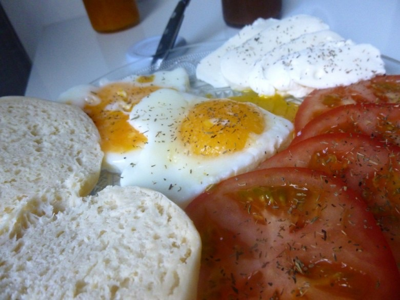

Muffins Anglais

Bonjour tout le monde!
Qui n’aime pas bruncher ? Pas nous en tout cas!
Surtout avec de délicieux muffins anglais, c’est un véritable bonheur. Ce qui me rend encore plus heureuse, c’est que ça fait très plaisir à mon chéri (oui car vous l’aurez compris, j’adore cuisiner pour lui!).
Pourquoi réserver ces petits déjeuners au week-end quand on peut s’en faire la semaine? D’ailleurs pour le goûter c’est extra aussi 😉 Ce qui est bien avec les muffins, c’est qu’on peut les remplir à notre goût: confiture, Nutella, crème de marrons, mais aussi œuf, bacon, fromage et j’en passe…
Je vais donc vous présenter la recette des muffins anglais. PS: J’ai appelé cette recette « version1 » car plus tard je compte vous en faire découvrir une autre, bien que celle-ci soit très satisfaisante.
Ingrédients
- lait - 300 ml
- levure de boulanger - 11 g
- sucre - 1 cuillère à café
- farine - 450 g
- sel - 1 cuillère à café
- semoule de maïs - juste pour saupoudrer les muffins
Instructions
- Dans un bol faites tiédir le lait ;
- Verser la levure et le sucre dans le lait (attention il ne faut pas que le lait soit trop chaud car sinon il tuerait la levure, patienter quelques minutes qu'une petite mousse se forme sur le dessus) ;
- Dans une jatte, mélanger farine et sel et creuser un puit ;
- A l'intérieur, verser le mélange lait+levure+sucre et pétrissez dix bonnes minutes ;
- Couvrir d'un linge propre et laisser lever une heure ;
- Dégazer, puis étaler la pâte au rouleau en veillant à ce qu'elle ait environ un centimètre d'épaisseur ;
- Former vos muffins, avec un emporte pièce, ou un verre selon la taille et forme souhaitée (perso, j'ai utilisé des emportes pièces de 9mm de diamètre) ;
- Déposer les sur une plaque à pâtisserie, couvrir d'un linge, et laisser lever ici trente minutes à une heure ;
- Une fois vos muffins gonflés, vous pouvez les saupoudrer de semoule fine de maïs ;
- Enfin faites les cuire à la poêle jusqu'à qu'ils soient dorés de chaque côtés (n'ajoutez pas de matière grasse dans la poêle!)


Les tips de la communauté
Recette très populaire et répétée avec succès. Les commentateurs rapportent que tout le monde a repris des pains, particulièrement appréciés pour la forme de cœur et le fromage. Plusieurs demandes de variantes avec farine complète.
Astuces
- Utiliser du film étirable pour faciliter le démoulage
- Laisser lever plus longtemps avec farine complète
Variantes suggérées
- Pains egg muffins
- Version avec farine complète